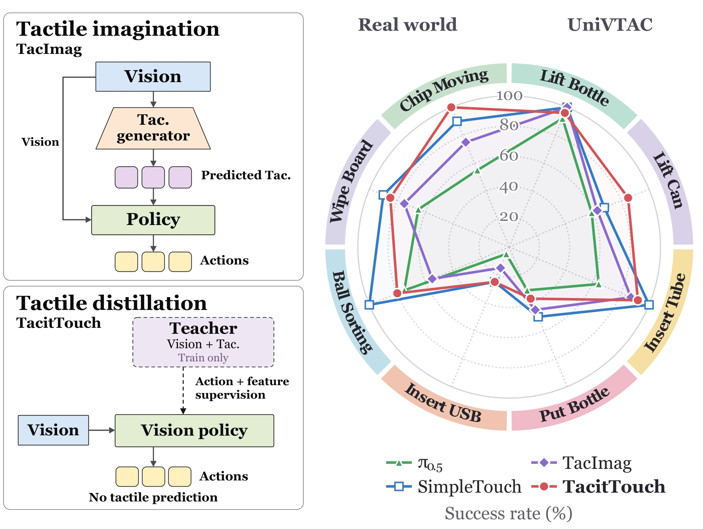

Lift Bottle
- Policy image inputs
- Head RGB
- TacitTouch visualization only
- Wrist RGB, left and right tactile
Vision only
Distilling Touch into Vision-Only Policies for Contact-Rich Manipulation
A USB plug can look aligned while its tip presses against the rim of the socket. Fingertip sensors reveal interactions like this during demonstrations, giving the teacher information it can use to choose an action.
TacImag predicts tactile observations during inference and passes them to its policy. TacitTouch transfers the teacher’s guidance during training. The deployed student then acts from camera images, robot state and the task instruction.

Mean success-rate gain
over vision-only π0.5
The four Franka FR3 tasks require different contact decisions. Ball Sorting depends on surface texture, Insert USB on connector alignment, Wipe Board on keeping the eraser against the board, and Chip Moving on transferring a fragile object intact. The TacitTouch clips show successful rollouts.
TacitTouch inputs Wrist RGB, robot state and task instruction.
Visualization only Side and overhead RGB, left and right GelSight.
TacitTouch inputs Wrist RGB, robot state and task instruction.
Visualization only Side and overhead RGB, left and right GelSight.
TacitTouch inputs Wrist RGB, robot state and task instruction.
Visualization only Side and overhead RGB, left and right GelSight.
TacitTouch inputs Wrist RGB, robot state and task instruction.
Visualization only Side and overhead RGB, left and right GelSight.
TacitTouch inputs Wrist RGB, robot state and task instruction.
Visualization only Side and overhead RGB, left and right GelSight.
| Task | π0.5 | Simple |
TacImag | Tacit |
|---|---|---|---|---|
| Ball Sorting | 75 | 100 | 55 | 80 |
| Insert USB | 5 | 25 | 15 | 25 |
| Wipe Board | 65 | 90 | 75 | 85 |
| Chip Moving | 55 | 90 | 75 | 100 |
| Mean | 50.00 | 76.25 | 55.00 | 72.50 |
Chip Moving saw the largest gain over vision-only control, with success rising from 55% to 100%. On Insert USB, the hardest of the four physical tasks, TacitTouch matched the measured-touch teacher at 25%. These rates come from 20 rollouts per method and task.
Each policy uses the task’s camera inputs with robot state and a task instruction. The clips show separate evaluation rollouts. Open Sensor views to see the recorded streams from the TacitTouch rollout.
Vision only
Vision only
Vision only
Generated tactile RGB at inference
| Task | π0.5 | Simple |
TacImag | Tacit |
|---|---|---|---|---|
| Lift Bottle | 92 | 100 | 100 | 96 |
| Lift Can | 59 | 68 | 63 | 85 |
| Put Bottle | 31 | 50 | 45 | 37 |
| Insert Tube | 64 | 100 | 87 | 92 |
| Mean | 61.5 | 79.5 | 73.8 | 77.5 |
Lift Can and Insert Tube contributed the largest gains over the vision-only π0.5 baseline. Success rose from 59% to 85% on Lift Can and from 64% to 92% on Insert Tube.
Each teleoperated demonstration pairs wrist RGB with left and right GelSight recordings. In Ball Sorting, the wrist camera follows the approach to the ball, while the GelSight streams show the contact patches forming at grasp. The teacher learns from both the visible scene and local contact.


The brightness test halves the camera RGB values before preprocessing. A second test shifts the simulated camera viewpoints. With dimmed input on the real robot, TacitTouch averaged 66.25% success compared with 46.25% for TacImag. Under shifted viewpoints in UniVTAC, their means were 58.5% and 43.3%, respectively.

The frozen SimpleTouch teacher receives the same camera images, robot state and instruction as the student, plus measured touch. Both evaluate the same noisy action at the same point in denoising. The student learns to match the teacher’s action update and the intermediate features that produce it. A separate loss trains the student on demonstrated actions.


Removing feature supervision while retaining action distillation and demonstrated-action supervision lowered mean success from 77.5% to 65.0% across the four main simulation tasks. Matching the teacher’s intermediate representations contributed beyond matching its action updates in this ablation.
In the timing benchmark, the deployed policy averaged 0.337 seconds per call. Its mean latency was 25.8% lower than TacImag’s.
arXiv identifier pending.
@misc{yang2026tacittouch,
title = {Distilling Touch into Vision-Only Policies for Contact-Rich Manipulation},
author = {Yang, Chen and Wang, Linhao and Shi, Linzhe and Zhang, Guohui and
Wu, Changjie and Zhang, Hang and Li, Haoyu and Xu, Mu and
Fan, Jiansheng and Wang, Chen},
year = {2026},
note = {Submitted to arXiv}
}